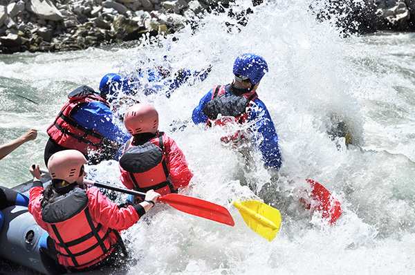

Here at White Water Rafting, our trips are designed to provide thrill seekers with an unforgettable experience on the water. Our expert guides ensure safety while you navigate stunning landscapes and challenging rapids. Oars Up!!

Here at White Water Rafting, our trips are designed to provide thrill seekers with an unforgettable experience on the water. Our expert guides ensure safety while you navigate stunning landscapes and challenging rapids. Oars Up!!
White Water Rafting was founded by a small group of river lovers who wanted to share their passion for the outdoors. What began with a single raft and a handful of friends has grown into a trusted adventure company, guiding thousands of guests down some of the most exciting rivers in the region.

Our team of experienced guides is dedicated to your safety and enjoyment on the water, whether you are a first-time paddler or a seasoned adventurer. Every trip is built around thrilling rapids, stunning scenery, and memories that last long after the paddles are put away.


